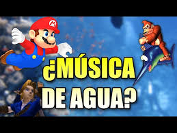

- 1. Filtros y ecualización Para lograr esa sensación dolida y tenue, se aplican filtros low-pass (eliminan agudos) y se recortan frecuencias altas, reduciendo los armónicos y dando una porosidad sonora.
- 2. Reverb y modulación Se añade reverb para simular la profundidad y eco del medio líquido. Además se usa modulación lenta (como chorus o flanger suave) que genera pequeños ondulantes, evocando el movimiento del agua.
- 3. Menor presencia rítmica Se atenúan transientes (golpes percusivos), ralenticen ligeramente el tempo o se suavizan los ataques de los sonidos, para crear una atmósfera más envolvente y menos energética.
- 4. Tono y timbre Frecuentes ajustes en pitch (a menudo bajadas sutiles) y énfasis en sonidos armoniosos o “flotantes” (sintes largos, pads, flautas digitales), que refuerzan la sensación de ingravidez y levez.
- El agua filtra fuertes frecuencias sonoras.
- La velocidad de propagación es mayor, alterando cómo percibimos ecos y reverberaciones.
- Las modulaciones simuladas imitan pequeñas ondulaciones y perturbaciones propias del entorno subacuático.
Siendo que, porque funciona?
Todo esto le da a la música esa calidad etérea, amortiguada y propia del mundo bajo el agua. Un excelente análisis de ludofonia de cómo la producción musical, jugando con ecualización, efectos y timbres, logra transportarnos a otro ambiente.
|  |
©2025. Derechos reservados.
| INICIO | HISTORIA | SOUNDTRACKS | TIENDA |
|